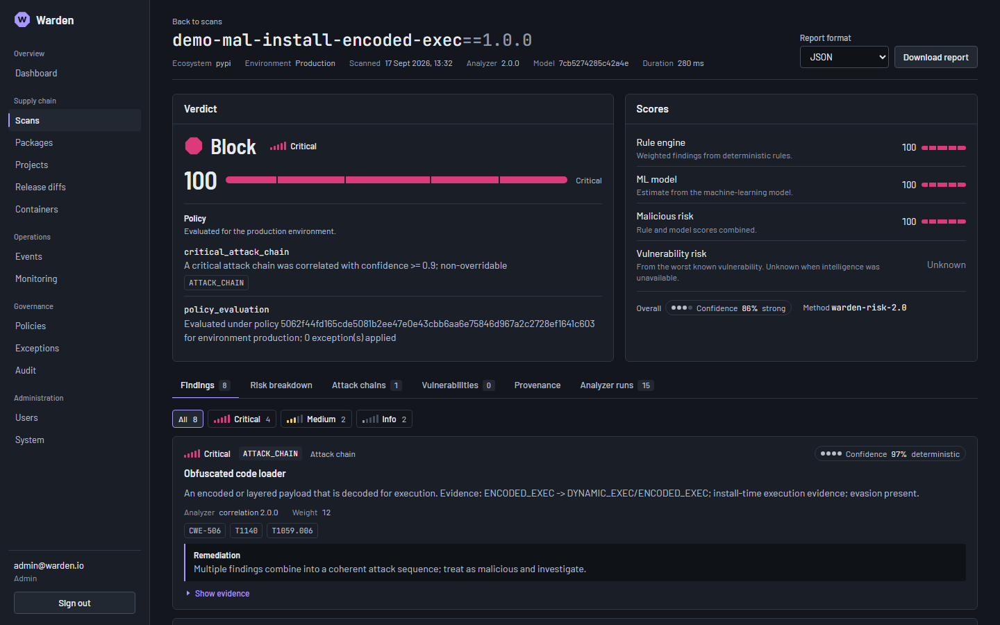

Know what a package does
before you install it.
A single pip install runs third-party code with your privileges. Warden reads the real
distribution — its code, its install hooks, its provenance — and decides allow,
warn or block. It never executes package code.

A CVE scanner can't see this.
There is no advisory for a malicious package nobody has reported yet. Typosquats, dependency confusion, hijacked maintainer accounts and poisoned releases all look clean to a vulnerability database. Warden asks a different question — what does this code do, and who really published it? — and keeps vulnerability intelligence as a separate dimension.
| No known CVE | Known CVE | |
|---|---|---|
| Behaviourally benign | ordinary dependency | patch it |
| Behaviourally malicious | what Warden is for | both problems |
How a scan works
For a (name, version) Warden fetches the published artifact, extracts it behind
hostile-archive guards, and runs every analyzer in parallel. Findings are correlated into attack chains, scored
across separate risk dimensions and judged by your policy.
01Acquire
PyPI metadata and the real sdist / wheel, hash-verified. npm manifests and lockfiles are inventoried for SBOMs.
02Extract safely
Path traversal, zip bombs, symlinks and oversized members are rejected. Nothing is imported or run.
03Analyze
14 analyzers: AST behaviour, install hooks, obfuscation, typosquats, provenance, secrets, YARA, Semgrep, OSV / KEV / EPSS.
04Correlate
Findings chain into named attacks — credential theft then exfiltration, install-time droppers — each mapped to MITRE ATT&CK.
05Score
Behavioural, vulnerability, provenance, integrity and more, kept separate. ML may sharpen a verdict but cannot invent one.
06Decide
Policy as code sets thresholds and deny rules per environment. Known malware and hash mismatches are non-overridable.
What's in the box
Use the pieces you need: a CLI that works without a server, a GitHub Action for CI, or the full platform with a security console.
CLI
Project scans, CycloneDX / SPDX SBOMs, release diffs, container-image scans and policy validation — offline, no server needed.
GitHub Action
Manifest hygiene and dependency-confusion checks on every PR, uploaded as SARIF to code scanning.
API & console
FastAPI backend and a React security console: dashboards, scan history, release diffs, policy exceptions with approvals.
Monitoring
A worker watches your dependencies for new releases and diffs their behaviour against the version you trust.
Reports
SARIF, Markdown and HTML reports; a hash-chained audit log for every decision.
Hardened deploy
Docker Compose with digest-pinned images, split networks, read-only filesystems and no default secrets.
Download & use
Requires Python 3.11+. Pick the path that fits.
# install from PyPI (or a wheel from the Releases page) pip install warden-supply-chain-security # scan a project's manifests — nothing is installed or executed warden project scan ./my-app # generate an SBOM warden sbom generate ./my-app --format cyclonedx -o bom.json # what changed between two releases? warden diff requests 2.31.0 2.32.0 # validate a policy before loading it warden policy validate policies/production.yaml
Every command is in the CLI reference.
permissions:
contents: read
security-events: write
steps:
- uses: actions/checkout@<sha>
with: { persist-credentials: false }
- uses: rakshit-737/warden-supply-chain-security@<sha>
with:
path: .
fail-on: high
Pin both actions to a full commit SHA. The SARIF report is uploaded before the gate is enforced, so a failing build still shows its alerts.
git clone https://github.com/rakshit-737/warden-supply-chain-security cd warden-supply-chain-security cp .env.example .env # fill in every required secret docker compose up -d --build # console on http://127.0.0.1:8080 # optional docker compose --profile worker up -d # release monitoring docker compose --profile observability up -d # Prometheus + Grafana
The stack refuses to start while any secret is unset. Hardening and scaling notes live in deploy/README.md.
git clone https://github.com/rakshit-737/warden-supply-chain-security cd warden-supply-chain-security cd backend && pip install -r requirements-dev.txt && cd .. make train # build the ML model artifact make demo # fill a local SQLite DB with real results from inert samples make run # API on http://localhost:8000 # second terminal cd frontend && npm install && npm run dev # console on http://localhost:5173
Demo packages are hand-written, inert samples named demo-… — not real PyPI packages.
Where to run it
The CLI and Action need no hosting. The platform is a long-running service with a database, a cache and a worker, so it needs a container host.
Your server / VM
docker compose up on any Linux host. Recommended: it is the configuration Warden is hardened and tested for.
Container platforms
Render, Fly.io, Railway, ECS or Kubernetes: run the API and worker images with managed PostgreSQL and Redis.
Vercel / static hosts
Only the console's static build fits. Point its /api rewrite at a backend hosted elsewhere — serverless functions can't run the scanner.
Measured, not claimed
A benchmark of 22 inert, hand-written packages runs through the real pipeline on every change. Warden's analyzers were also run against established PyPI projects — which caught an ML model that scored ordinary libraries as malicious, and led to the guardrail that stops the model inventing a verdict.
The corpus is small and synthetic: a regression baseline, not a real-world detection rate. Read the benchmark.
malicious samples detected
benign look-alikes blocked (1 warned)